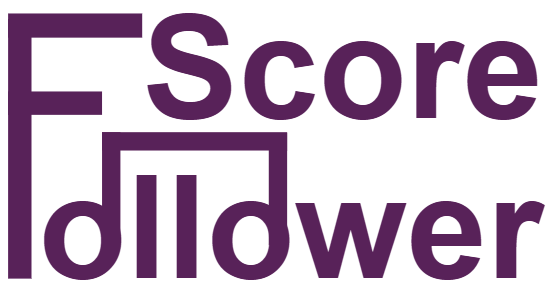

About us
Wer wir sind
Willkommen bei ScoreFollower!
ScoreFollower ist eine App zur Anzeige von Musiknoten und Verfolgung des Audiosignals im Notenblatt, um die aktuelle Position anzuzeigen.
Die Marke richtet sich an Hobbymusiker:innen, Musikstudierende und Musiker:innen in Ensembles und Orchestern.
Achtung: Dieses Unternehmen und die vertriebene Software sind fiktiv. Die Website wurde im Rahmen einer Lehrveranstaltungsübung (Daten- und Informatikrecht, TU Wien, WS25/26) erstellt und dient ausschließlich zu Demonstrationszwecken.
Unsere Markenformen
Für die Wiedererkennbarkeit der Marke wurden mehrere Markenformen entwickelt.
1. Wortbildmarke
Der Name "ScoreFollower" leitet sich von der aktuellen Position in den Noten ("Scores"), die verfolgt wird ("Follower"), ab. Das Design ist in Dunkelviolett (#582259) gehalten, wobei die zwei Buchstaben "o" zu Achtelnoten verbunden sind.
2. Bildmarke
Die Design-Wahl der Bildmakre (siehe links oben) spiegelt die Verbindung zur Musik der Marke wider.
3. Klangmarke
Da unser Kernprodukt Audioerkennung ist, ist die Klangmarke unsere "akustische Visitenkarte". Sie stellt eine kurze Klavier-Tonfolge dar, die bei Klick auf die Bildmarke oben links der Webseite abgespielt werden kann (nur wenn man sich bereits auf der Startseite befindet).
Rechtlicher Schutz & Klassifizierung
Um unsere Innovation zu schützen, haben wir unsere Markenidentität geprüft (via EUIPO eSearch & TMview) und den folgenden Nizza-Klassen zugeordnet:
- Klasse 9: Herunterladbare Computersoftware zur Audioanalyse; Software zur Notenanzeige
- Klasse 42: Bereitstellung von Software; Innovation im Bereich Musiktechnologie
Achtung: Die dargestellten Marken wurden im Rahmen einer Lehrveranstaltungsübung (Daten- und Informatikrecht, TU Wien, WS25/26) entwickelt und sind nicht als eingetragene oder kommerziell genutzte Marken vorgesehen.